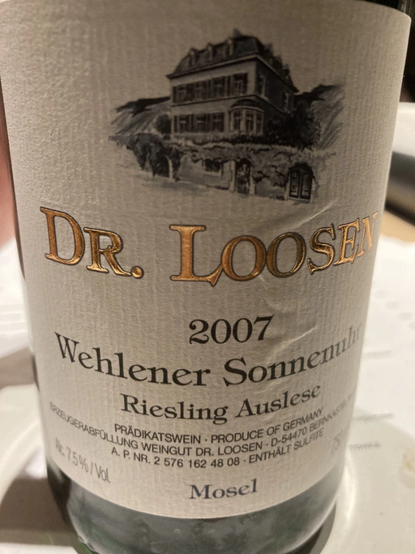

- Type
- White Still, Sweet
- Producer
- Dr. Loosen
- Vintage
- 2007
- Location
- Germany, Mosel
- Grapes
- Riesling
- Alcohol
- 7.5
- Sugar
- 97
- Price
- 1150 UAH
- Cellar
- N/A
Ratings
2021-07-19 - 8.00
We decided to finish wonderful evening with this sweet Riesling. Rich bouquet full of honey, tropical fruits, peach and spices. Fresh, ripe and well balanced. Wonderful age and great QPR.